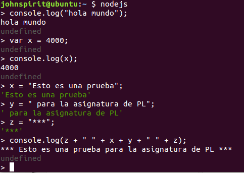
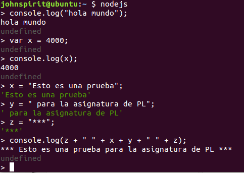

Aplicacion node de ejemplo:
var http = require("http");
var url = require("url");
http.createServer(function(request, response){
response.writeHead(200, {Content.Type": "text/plain"});
var params = url.parse(request.url, true).query;
var input = params.number;
var numInput = new Number(input);
var numOutput = new Number(Math.random() * numImput().toFixed(0);
response.write(numOutput);
responde.end();
Dependiendo de nuestro sistema operativo deberemos instalar Node.js
LINUX
sudo apt_get install python-software-properties
sudo add-apt-repository ppa:chris-lea/node.js
sudo apt-get update
sudo apt-get install nodejs npm
MAC
En caso de Mac deberemos utilizar el gestor de paquetes "homebrew" usando brew install nodejs.
Si se produciera un error en la instalacion se podra probar hacer un "brew update".
WINDOW
En el caso de Window vale con descargar y ejecutar el instalador.
 


Uso de Node.js
Node.js se ejecutara usando el comando nodejs
Markdown es un lenguaje de marcado ligero parecido al que se emplea en muchas wikis y basado originalmente en convenciones existentes en el carcado de los correos electronicos. Emplea texto plano, procurando que sea legible pero consiguientdo que se convierta en XHTML correctamente formateado.